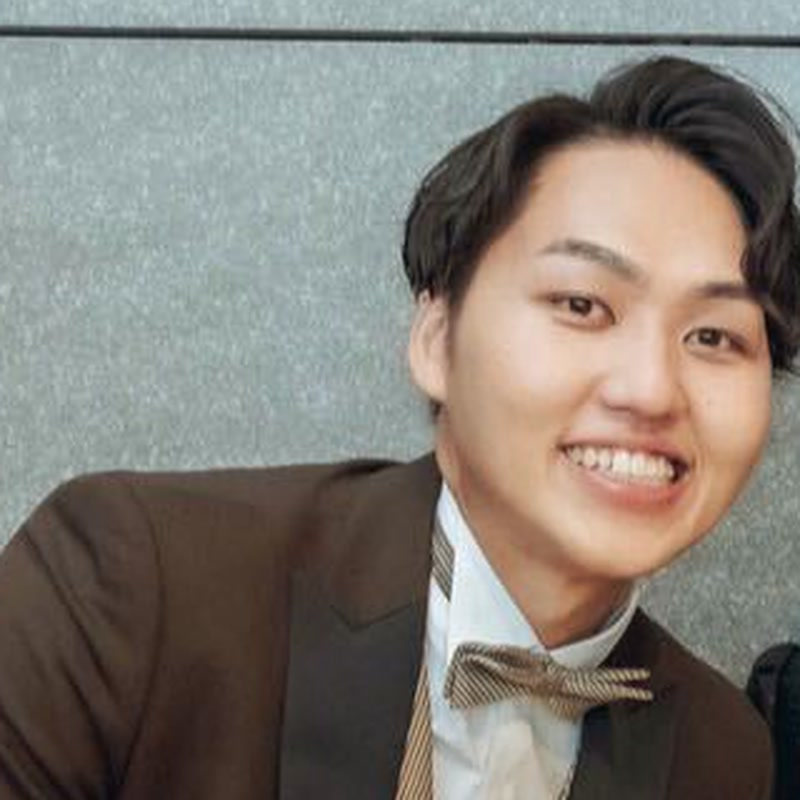
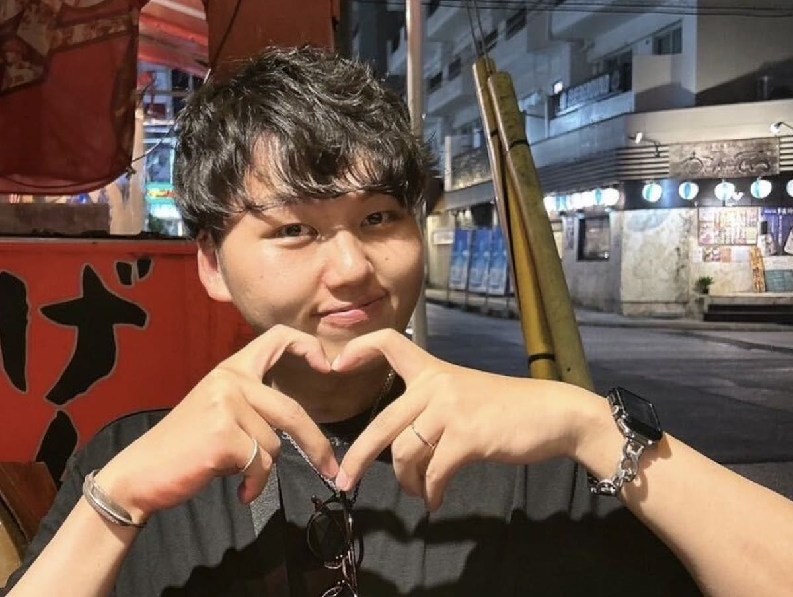

株式会社ライトアップ 経営コンサルティング局
Jマッチエンジン ／ OEM提供 担当

TO C × TO B
TAMURA DAISUKE
ご縁を、
一度きりで終わらせません。
MY MISSION
新卒で入った会社では、携帯電話の店舗営業を5年やりました。うち2年半は店長です。目の前のお客さま一人ひとりに向き合う仕事で、紹介がどこから生まれるのかを覚えたのは、この5年でした。
2023年にライトアップへ中途入社し、法人向けの営業としてJSaaSストアの販売を担当しました。途中から企画マーケティングチームへ移り、Jシステム導入機関との打ち合わせや、ホームページ契約企業の管理運営といったCSの業務も並行しています。売ったあとがどうなるかを、長く見てきた側です。
いまの担当はJマッチエンジンのOEM提供です。御社の看板で配っていただき、その先のお客さまへ使える制度が毎週届く。お客さまと直接やりとりする機会は、ほとんどありません。
中小企業の多くは「お金がない」を理由に、AI化も自動化も後回しにしてしまいます。その理由を、先に消しておきたい。紹介が続くかどうかは、結局そこだと思っています。
数えてみたら、行った施設が150を超えていました。新しい土地へ行くと、まずその街のサウナを調べます。商談先の近くにいいところがあれば、そのまま寄って帰ることもあります。
おすすめのサウナがあれば、ぜひ教えてください。土地を問わず伺います。娘と一緒に「スンスン」の動画を観るのが、いまの日課です。10か月なので会話にはなりませんが、同じ画面を見て同じところで笑っている時間が、いちばん気が抜けます。

夫婦でアカウントを持っていて、行ったお店をSNSに投稿しています。どこで何を食べたかが記録として残るので、人におすすめを聞かれたときにすぐ出てくるようになりました。
商談で間が空いたときは、このあたりを振ってください。だいたい話が伸びます。
主にお話しするのは、すでにお客さまをお持ちの会社です。Jマッチエンジンを御社の看板で配れる形にしてお渡しし、その先のお客さまを支える組み立てになります。申請書類の作成代行は行いません。有資格者の領域だからです。
御社のロゴと名前で、補助金・融資・税制優遇の情報が毎週自動で届く仕組みを配れるようになります。開発もサーバーも問い合わせ対応も、こちらで持ちます。御社は「毎週、役に立つ会社」という立ち位置を得る形です。
店頭で5年、CSで数年。売ったあとに何が起きるかを見てきました。配って終わりではなく、御社のお客さまが実際に使い続ける状態まで見ます。紹介が生まれるのは、だいたいそのあとです。
補助金が該当したという通知と同じ一通の中に、「この対象経費に使えます」と御社の商材が並びます。予算の目処が立った瞬間に、御社の名前が出る設計です。売り込みの回数ではなく、タイミングを合わせにいきます。
ホームページ制作会社、広告代理店、AI営業代行会社。新しい事業そのものを、AIエージェント込みの一式でお渡しします。人を採ってから始めるのではなく、先に回る形を持ってから人を足す順番です。
補助金・助成金は審査を伴う制度です。採択や受給を保証するものではありません。ある商材が対象経費に当たるかどうかの最終判断は、制度の事務局が行います。
「うちのお客さまに配れるか」の一言からで大丈夫です。御社の商材と競合する部分は外せますので、そこも含めてご相談ください。
株式会社ライトアップ 経営コンサルティング局
田村 大輔（たむら だいすけ）